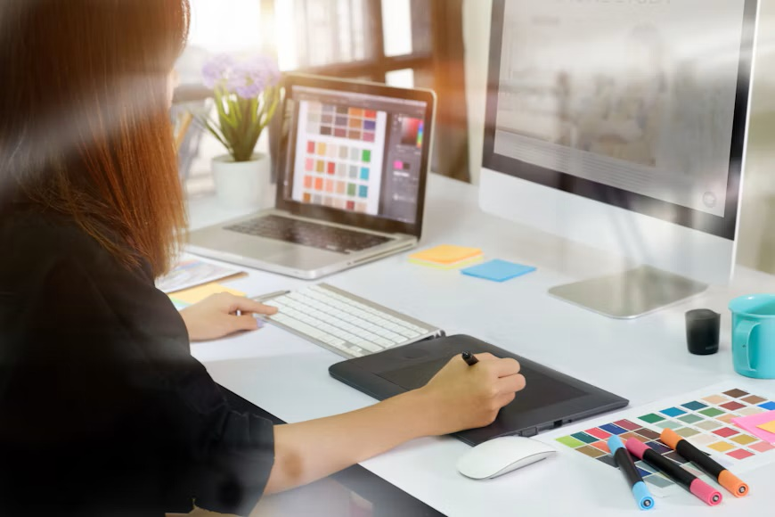

In mijn vrije tijd speel ik graag videogames. Mijn favoriete games zijn Truck Simulator, God of War en GTA. Ik vind Truck Simulator leuk omdat ik graag met vrachtwagens rijd en verschillende plaatsen ontdek. Bij God of War hou ik van het verhaal en de avonturen. GTA vind ik leuk omdat ik veel verschillende dingen kan doen in het spel. Gaming helpt mij om te ontspannen na een drukke dag.
Ik ben geïnteresseerd in technologie en vind het leuk om nieuwe programma's te ontdekken. Ik probeer graag verschillende software uit om te zien hoe alles werkt. Soms ontdek ik handige programma's die ik kan gebruiken voor mijn studie of in mijn vrije tijd. Omdat ik programmeren studeer, wil ik ook beter begrijpen hoe programma's worden gemaakt. Ik vind het interessant om nieuwe dingen uit te proberen en mijn kennis over computers verder uit te breiden.
Naast gaming en technologie hou ik ook van design. Ik vind het leuk om banners en profielfoto's te ontwerpen. Ik experimenteer graag met verschillende kleuren, achtergronden en stijlen. Soms maak ik een eenvoudig ontwerp en soms probeer ik iets nieuws. Ik vind het belangrijk dat de kleuren goed bij elkaar passen en dat het resultaat er mooi en verzorgd uitziet. Door te ontwerpen kan ik mijn creativiteit gebruiken en nieuwe ideeën uitproberen.
Voor mijn ontwerpen gebruik ik Canva en andere programma's. Ik maak graag banners en profielfoto's en probeer verschillende stijlen uit. Soms kies ik voor donkere kleuren en soms voor lichte kleuren. Ik let op kleine details, zoals de achtergrond, de tekst en de combinatie van kleuren. Door verschillende programma's te gebruiken, leer ik nieuwe technieken kennen. Ik vind het leuk om mijn ontwerpen steeds te verbeteren.


Mijn hobby's zijn belangrijk voor mij omdat ik er veel plezier aan beleef en tegelijk nieuwe dingen leer. Gaming helpt mij om te ontspannen na mijn lessen. Bij sommige games moet ik goed nadenken en problemen oplossen. Dat vind ik interessant, omdat ik die vaardigheden ook kan gebruiken tijdens mijn opleiding programmeren.
Technologie en design geven mij de kans om creatief te zijn. Wanneer ik een nieuw programma ontdek, probeer ik eerst zelf uit hoe het werkt. Soms lukt iets niet meteen, maar dan probeer ik opnieuw. Bij het ontwerpen van banners en profielfoto's leer ik ook geduldig te werken en op details te letten.
Als ik een nieuw programma wil leren gebruiken, vraag ik meestal hulp aan ChatGPT. Ik vind het handig om uitleg stap voor stap te krijgen, vooral wanneer iets moeilijk is. Daarna probeer ik het zelf uit op mijn computer. Soms begrijp ik iets niet meteen en moet ik het opnieuw proberen. Ik vind het fijn dat ik op mijn eigen tempo kan leren. Bij het maken van banners en profielfoto's gebruik ik verschillende programma's en probeer ik nieuwe functies te ontdekken. Ook tijdens mijn opleiding programmeren leer ik veel nieuwe dingen. Ik wil steeds beter worden in het werken met computers en software. Mijn hobby's helpen mij om creatief te denken en nieuwe vaardigheden te ontwikkelen. In de toekomst wil ik mijn kennis verder uitbreiden en meer ervaring opdoen met programmeren en design.